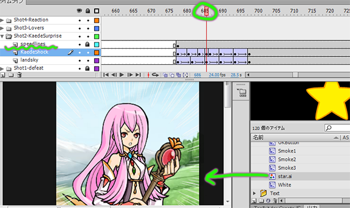

Plop to Layer
This command takes selected library items and puts them each on a new layer, properly named, with the first frame at the current time. This saves time for animators who would otherwise have to make new layers, name them appropriately, place objects on the stage, make a new key at the appropriate time, and delete prior keys.
このコマンドは各の選択されたライブラリーアイテムを新しいレイヤーに置きます。
新しいレイヤーの最初のキーフレームは現在のフレームで、レイヤー名は自動的にアイテム名のとおりに調整します。
普通のワークフローに比べて、このほうが時間と手間を省きます。
このツールを使わなかったら、各レイヤーを別々で名を付けて、アイテムをステージに置いて、正しいフレームにスクロールして、新規キーフレームを制作して、その前のキーを消さなければなりませんから。

A new layer is placed above the current one. The first keyframe is placed at the playhead, containing the selected library item. Works with multiple items/layers.
新しいレイヤーは現在のレイヤーの上に置きます。最初のキーフレームはプレイバックヘッドの現在の時間に挿入されます。内容はライブラリーの選択範囲のアイテムです。複数のライブラリーアイテムとレイヤーでも実行できます。

Recommended keyboard shortcut: Ctrl+Alt+P
おすすめのキーボードショートカット Ctrl+Alt+P